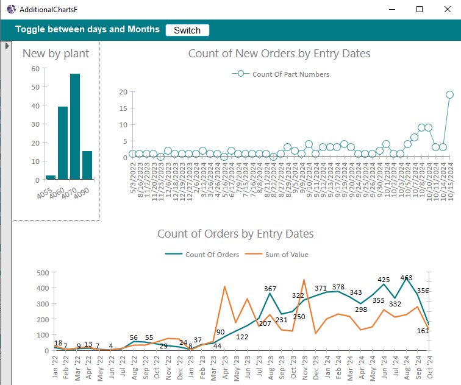

Database Management System
This project involves the design and implementation of a robust database management system tailored for semiconductor parts and purchasing operations. The system integrates automation, analytics, and reporting features to streamline business processes.
Note: Information in this document may have been altered or fictionalized to protect sensitive and confidential information.
Key Features
- Automated data processing with SQL and VBA
- Interactive dashboards providing real-time business insights
- Scalable architecture for handling over 6,500 parts
- Enhanced reporting capabilities with detailed visualizations
Order Tracking
- Developed an overview system to identify discrepancies in customer-submitted orders and recommend actions for resolution.
- Reduced manual review time by introducing automation to streamline order acceptance processes.
- Provided a holistic view of active sales orders to identify bottlenecks and deficiencies that could lead to missed commitments.
Analytics
- Automated metrics tracking using SQL, enabling performance monitoring with no additional effort.
- Identified areas of improvement and optimized business strategies based on data insights.
- Tracked and analyzed customer demand to proactively scale resources in response to volume changes.
- Utilized cross-tab queries to forecast demand and identify at-risk parts for better planning.

Issue Tracking
- Created a system to categorize and address parts-related issues, standardizing the resolution process.
- Provided management with a consolidated view of active issues to ensure timely resolution.
Purchase Orders
- Consolidated orders to enable group purchasing, reducing costs and improving efficiency.
- Tracked delays from requisition to order placement for better process visibility.
- Implemented vendor categorization to reduce shipping costs and prioritize urgent parts.
- Prevented duplicate entries, saving time and reducing waste.
Shipping
- Integrated stock reports from SAP with customer information for seamless order processing.
- Created automated shipping reports to identify parts ready to ship and address outstanding demands.
Quoting
- Designed a system to manage the quoting process across multiple branches, consolidating disparate data sources.
- Reduced time required for data entry by creating tools to upload and manage quote documents efficiently.
- Developed functionality to automatically generate RFQ emails with part and vendor information, increasing quoting speed.
Authentication and Security
- Implemented secure data storage accessible only to authorized personnel.
- Encrypted data at rest and added password protection for all applications.
- Created logs for activity tracking and ensured applications were executable-only to prevent unauthorized code changes.
- Established user-level privileges to prevent accidental or unauthorized operations.
Sub ImportCellValueToTable()
Dim objExcel As Object
Dim objWorkbook As Object
Dim objWorksheet As Object
Dim strFolderPath As String
Dim strFileName As String
Dim db As DAO.Database
Dim rs As DAO.Recordset
Dim filePath As String
' Initialize target cells
Dim TargetMFR As String
Dim TargetNAME As String
...
' Initialize cell value variables
Dim cellValueMFR As Variant
Dim cellValueNAME As Variant
...
' Folder path containing Excel files
strFolderPath = "\\file.global\secure\data\branch\PDFs\Vendor Covers\"
' Specify the target cell to extract (e.g., "A1")
TargetMFR = "A22"
TargetNAME = "b22"
...
' Set up the database and recordset
Set db = CurrentDb
Set rs = db.OpenRecordset("inputtempt", dbOpenDynaset)
' Loop through each Excel file in the folder
strFileName = Dir(strFolderPath & "*.xlsx")
Do While strFileName <> ""
filePath = strFolderPath & strFileName
' Open the Excel file
Set objExcel = CreateObject("Excel.Application")
Set objWorkbook = objExcel.Workbooks.Open(filePath)
' Set the worksheet to the first sheet (adjust if needed)
Set objWorksheet = objWorkbook.Worksheets(1)
' Extract the value from the specified cell
cellValueMFR = objWorksheet.Range(TargetMFR).Value
cellValueNAME = objWorksheet.Range(TargetNAME).Value
...
' Add the extracted value and filename to the table
With rs
.AddNew
!FileName = strFileName
!MFR = cellValueMFR
...
.Update
End With
' Close the workbook and clean up
objWorkbook.Close False
Set objWorksheet = Nothing
Set objWorkbook = Nothing
Set objExcel = Nothing
' Get the next file
strFileName = Dir
Loop
' Clean up
rs.Close
Set rs = Nothing
Set db = Nothing
MsgBox "Data extraction complete!"
End Sub
Results
This solution led to significant improvements, including:
- 50% reduction in manual tasks
- Improved accuracy in order processing
- Enhanced visibility into business performance metrics